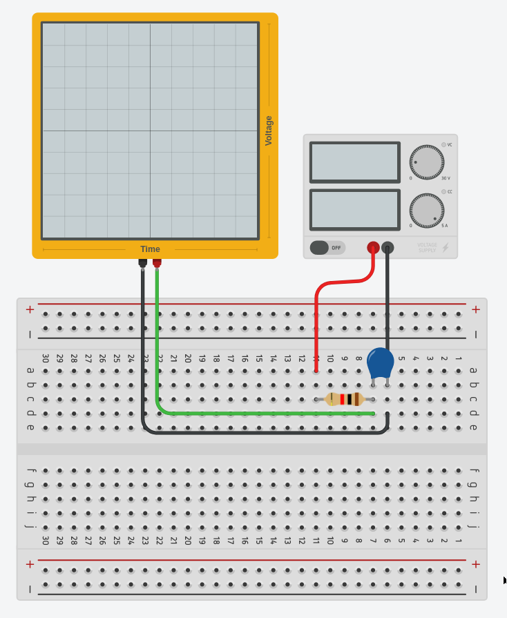

This course is an introduction to basic electronic test equipment commonly used in building and debugging circuits. In addition, the reader will also become familiar with the usage of breadboards, a common circuit prototyping material.
The test equipment covered will include multimeters, DC power supplies and oscilloscopes, with a short section on logic analysers.
Although this course material can be consumed without having the above equipment, it is still recommended to have a set on-hand for the full experience. The best way to learn how to use electronic equipment is to keep using them! (press all the buttons)
If you have any feedback on the content presented here or find any mistakes, please reach out to jasshank@u.nus.edu!
Recommended reading guide
graph TD; Multimeter --> id0[Activity I] id1[Power supply] --> id0[Acitivity I] id0[Activity I] --> Oscilloscope Oscilloscope --> id3[Acitivity II] Oscilloscope --> id2[Logic analyser]
What is it?
A multimeter is a combination of multiple electronic meters (as the name suggests). A typical multimeter includes the following features:
- DC voltage measurement
- DC current measurement
- Resistance measurement
- Continuity testing
Some also include the ability to measure AC sources and test the functionality of diodes. Be sure to have a look through the manual provided with the multimeter you own to explore its full capabilities.
Ports
Before using a multimeter, you should take note of the ports being used on it (the red and black holes at the bottom of the device). The COM port stands for common, and is connected to ground. This is where your black probe goes. The other ports will be for the red probe, indicated by a current rating (such as 10 A) or various symbols found on the device. Ports labelled with a current rating are meant to measure large currents, while the other port is meant for low current applications (check your multimeters manual for exact specifications).
Voltage and current
The V symbol on your multimeter indicates the voltmeter setting, while the A symbol indicates the ammeter setting.
These symbol will be appended with various other symbols, such as ~, = or m. These symbols (usually) indicate AC measurement, DC measurement and voltage measurement in the millivolt range.
Instead of m, some multimeters will include the number 2 in different magnitudes, such as: 2, 20, 200, 2000. Fun fact on why the number 2 is used (hint: it's related to 7-segment displays).
The unit measured is voltage and amps respectively, with the scaling dependent on the range being measured. Alternating the orientation of the test probes would result in flipped readings, so its up to the user to be aware of the flow of current in the circuit.
Resistance
The $\ohm$ symbol indicates resistance measurement and its unit of measurement is also in $\ohm$. The orientation of the positive and negative probes of the multimeter do not affect the measured resistance.
Continuity
Continuity testing is used to check if current can flow along the tested circuit or material. A successful continuity check will result in a "beep" noise.
It is good practice to test the probes of the multimeter against itself to ensure that you are a) in continuity mode and b) continuity mode is functioning as intended. You should hear a beep when the probes touch each other.
What is it?
A controllable DC power source, especially useful when testing circuits. A key features of DC power supplies is the ability to set voltage and current limits, allowing you to test your circuit safely.
Setting voltage and current
In general, you click the voltage/current button, select the decimal place you want to change, then turn the knob to the value you desire. However, the method to set voltage and current limits can vary, so you are highly encouraged to read the manual which is provided with yours.

Common terminology
- Device Under Test (DUT) - This refers to whatever device or circuit is currently being connected to the power supply and is commonly used in various fields related to electronics.
- Constant Voltage (CV) - This is the default mode of a power supply; the voltage will remain stable at the value configured by the user.
- Constant Current (CC) - When the DUT draws more current than the power supply can output the power supply will enter CC mode, dropping the voltage while maintaining current draw. This can occur because the physical limits of the power supply have been reached, or the current draw exceeded the value set by the user.
Limitations
Every power supply will have its own maximum ratings, such as 30 V @ 150 W with a maximum current of 5 A. This could result in 'beefy' motors not functioning as intended when used with a power supply. Instead, a battery with much higher current ratings should be used, albeit cautiously.
What is it?
It is a measurement device which is measures the voltage across two points. Although this may seem similar to a voltmeter, an oscilloscope does this extremely quickly, allowing it to plot voltage graphs against time with small time steps.
This makes scopes brilliant for observing fast moving digital and analog signals, commonly found in communication lines or in fast switching circuits.
The resolution (the size of the time step) of an oscilloscope varies and is dependent on the scope being used. Always refer to the manual and specification sheet of your scope to learn its limitations.
Display
The oscilloscopes display has voltage on the vertical axis and time on the horizontal axis.
The display itself is broken up into a grid. Each square on the grid has two divisions, the vertical and horizontal division. The vertical and horizontal divisions are sometimes referred to as voltage and time divisions respectively, due to the axis positions. The exact units of these divisions are generally displayed at the top or bottom of the scopes display. (hint: when first using your scope, turn the knobs to see what changes!)
Channels
Oscilloscopes can have multiple channels for taking measurements. A 3 channel scope will be able to measure 3 different signals at same time, overlaying them on top of each other on the display.
Individual channels can be toggled on and off, depending on what the user is observe from the DUT. Care should be taken to make sure the channel being display corresponds to the channel being used for measurement.
Probes
Probes are connected to the channel ports of an oscilloscope. Each probe has a ground clip as well a hook for taking measurements.
When taking measurements across very metal contacts, the hook attachment can be removed, revealing a fine metal tip for taking measurements on small traces! Additionally, the ground clip can be switch out for a fix distance tip too.
Below is an image of a probe which has had the hook removed and the fixed ground tip attached.
 Image credit
Image credit
Finally, some probes come included with a slider marked with 1x and 10x on either end. 1x and 10x refers to the input impedance (resistance) of the scope, with the 10x mode increasing the input impedance of the probe by 10 times. This will result in a cleaner measurement, but with the downside that the measured voltage will be 10 times smaller than what it actually is. Because of this, small signals might become too small to be measured by the scope. The choice of mode should be dependent on the DUT and is up to the user.
All the buttons
Scopes have...a lot of buttons. The two basic knobs are the horizontal and vertical positioning knobs. These knobs allow you to move your measured signal left, right, up and down.
The trigger (sometimes called auto-scale or just auto) button is to automatically sync up your scope with the incoming signal, 'calibrating' it. Either than auto-triggering, you can configure your scope to trigger at specific types of signals. Find out more here.
The rest of the buttons on the scope are dependent on the specific model, but they allow you to interface with the different measurement modes of the scope, such as frequency, pulse width modulation, peak-to-peak, maximum, minimum, mean and so on. Nearly every scope comes with a 'manual measurement' mode, in the form of cursors. Cursors are lines which you can move across your scopes display to help you calculate changes between two points, either in the voltage or time scale.
The best way to figure out what the buttons on your scope is to click them and see what happens, so don't be afraid to do so. (reading the manual for your scope also helps)
What is triggering?
Triggering helps to synchronise the incoming signal with the display of the scope. When the scope is not triggered (synchronised).
A good way to see for your self what an unsynchronised scope looks like is to attach your probe to the square wave signal generator of your scope (usually at the bottom right hand corner), and rotate the trigger knob so its completely above or below the signal. You will immediately notice that the waveform displayed is no longer a smooth square wave as it starts jumping across your screen. If you don't have a scope on hand, this video by Keysight provides a great visualisation of it.
Trigger modes
By default, your oscilloscope will be on 'auto' trigger mode and will continuously show you whatever is being fed into it. However, there are situations were you want to capture a particular moment with your signal and not the entire thing, such a spike above a certain voltage or the transition from 0 V to 5 V. This is where trigger modes come in.
Different scopes offer different types of trigger modes, but common ones are triggering during a low to high transition or when a certain gradient is observed in the signal. As usual, your scopes manual will detail all the trigger modes available to you. This is the manual for the scope found in the NUS E2A Electronic Lab, on the section 'Trigger Types'.
What is it?
A measurement device which is very similar to an oscilloscope, but it designed to only measure digital signals. These devices are usually much more accessible than an oscilloscopes due to its significantly lower price (~10 SGD), and are invaluable for investigating communication protocols such as UART, I2C and SPI.
The majority of logic analyser do not come with a display built in, and instead need to be connected to a computer to view the results. The sigrok project is an open-source project designed to interface with different measurement devices, including logic analysers. This would allow you to interface your 10 SGD analyser with a robust front-end, which would usually be locked behind a paywall in the hundreds of dollars range.
The activities in this section are designed to familiarise yourself with the basics of these tools. It is recommended to answer/ponder on the questions asked in each activity, and if you have the time, to also test out your ideas from these questions using the equipment.
Goal
Find the voltage across the resistors, individually and together.
Circuit

Points to think about
- How are the holes on the breadboard connected? How would you go about finding this out with only a wire and a multimeter?
- Do the voltages measured line-up with what you expected?
- How would you measure the current flow across the resistors?
Goal
Observe the charging curve of a capacitor.
Circuit

Points to think about
- How long did it take for the capacitor to charge?
- You're only interested in measuring the charging of the capacitor. Is there a way to only measure this on the oscilloscope?